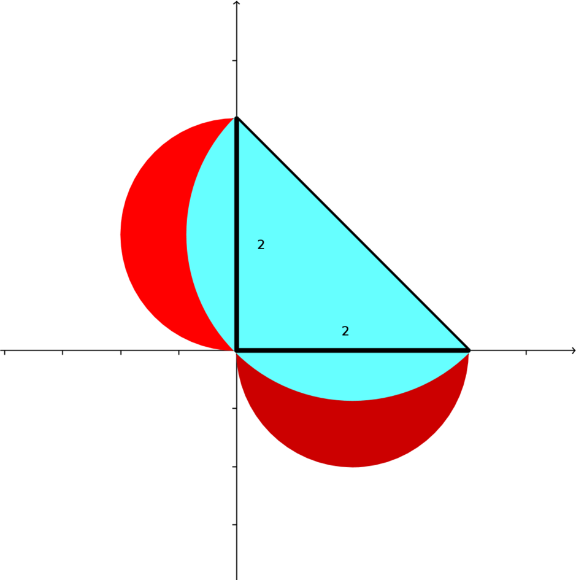

Unit 5 Classwork (Lunes)
MultiV 2021-22 / Dr. Kessner
1. Lune of Hippocrates Pretend you are the Greek mathematician Hippocrates and show that the area of the lune (red, between the two circular curves) is the same as the area of the triangle. Also calculate the area of the lune using double integration.
https://en.wikipedia.org/wiki/Lune_of_Hippocrates
2. Lunes of Alhazen Pretend you are the Arab mathematician Hasan Ibn al-Haytham (Alhazen) and show that the sum of the areas of the lunes (red, between circular arcs) is equal to the area of the triangle. Also calculate the sum of the areas of the lunes using double integration.
